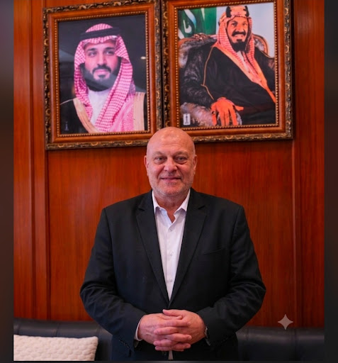

تقديم حلول استشارية وبرامج تطويرية متقدمة لمجالس الإدارة والإدارات العليا؛ تستند إلى خبرة تدريبية عميقة بالمملكة العربية السعودية وعمق أكاديمي متخصص في علم النفس لتشخيص وحل المشكلات التنظيمية.

عاماً في التدريب التنفيذي بالمملكة
التقييم العام للمدرب
برامج تدريبية متقدمة
تخصيص كامل لاحتياجات الشركات
شركة متخصصة في التدريب والاستشارات المؤسسية وتطوير الأعمال؛ تركز على تطوير القيادات، السلوك التنظيمي، بيئة العمل، وإدارة الأزمات. نقدم خبرات تراكمية رفيعة المستوى لمساعدة الشركات في المملكة العربية السعودية على بناء بيئة عمل مستقرة وعالية الإنتاجية تحت إشراف نخبة من الخبراء الأكاديميين والمهنيين.
اختر أي برنامج أدناه لاستعراض تفاصيله الكاملة والالتحاق به.
جلسة استكشافية لمدة 60 دقيقة مع المستشار التنفيذي لتحديد احتياجات فريقكم التدريبية والتطويرية.
| المدة بالساعة | نمط التدريب | اللغة | الرسوم |
|---|---|---|---|
| حضوري أو تفاعلي عن بُعد (Interactive) | العربية |